第5分団
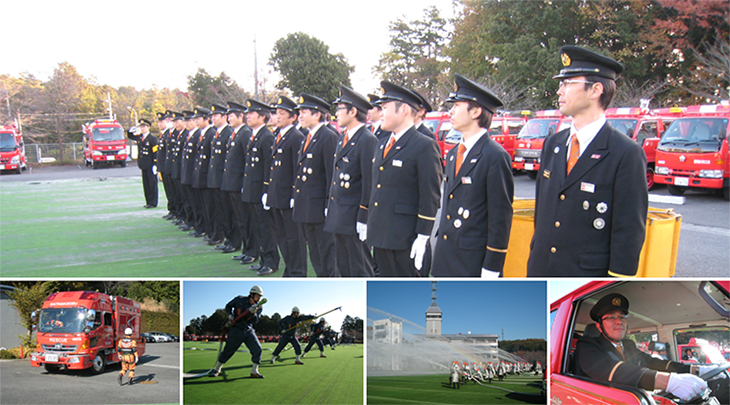
令和2年度トピックス
◆間野黒指にて中継送水訓練を行いました。訓練はホースを合計12本延長して自然水利を利用して行いました。1部ポンプ車（水利）2部可搬ポンプ（中継）で放水を行った後、人員配置を変更し普段は使用しない車両（ポンプ）で放水訓練を行いました。ポンプ操作をベテラン団員から指導してもらい、実際に操作するのは初めてのポンプでもしっかりと放水出来ました。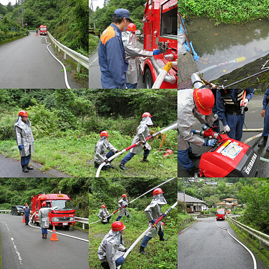
◆新型コロナウイルス感染症の影響により入団式や操法大会が中止となってしまいました。このような状況で遅くなってしまいましたが、新入団員の紹介をさせていただきます。4/1より5分団2部に入団した藤原利貴君です。同じ仲間として今後とも宜しくお願い致します。
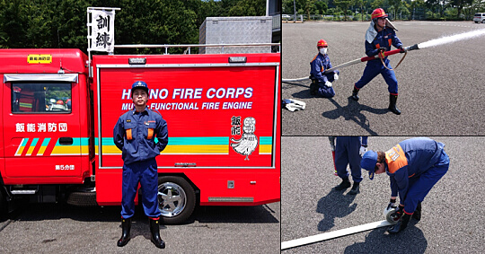
令和元年度トピックス
◆令和2年2月23日(日) 体力強化訓練体力強化訓練の為阿須の清掃活動致しました。阿須河川へ集合し改めて台風被害の凄さを感じました。
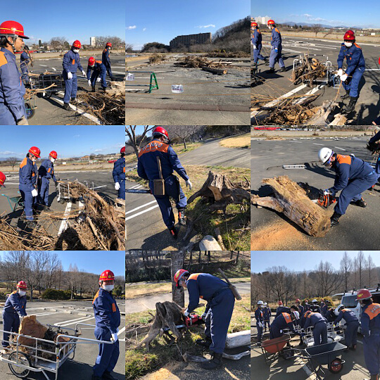
◆2020/1/19（日）操法練習開始
ポンプ車操法の練習を開始致しました。左から中村部長加藤藤野宿谷清水新入団員の宿谷加藤団員は初操法になりますが無事最後までやり遂げられるよう5分団一丸となり良いチームに作り上げられたらと思っています。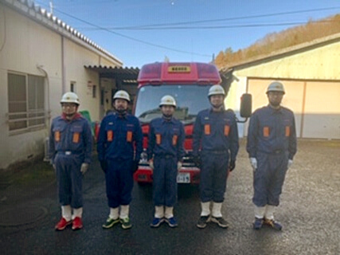
◆2020/1/11（土）出初式
令和2年明けましておめでとうございます。1/11土晴天の中、出初式が開催されました。今年は暖冬に恵まれよりよく行動出来たと思いました。そして飯能第一中学校吹奏楽部の皆さん素晴らしい演奏有難う御座いました。これからの飯能消防団に勇気希望を与えて下さいました。今年も第5分団宜しくお願い致します。
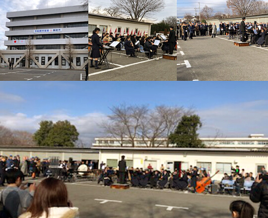
◆2019/11/23（土）特別点検本番
今年度特別点検は雨天により小隊中隊以外は体育館での挙行となりました。生憎の雨天でしたが開催された事に感謝致します。
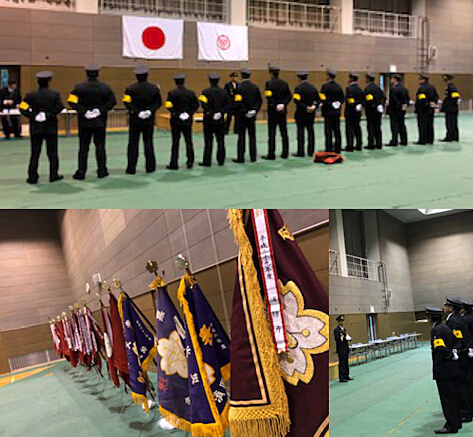
◆2019/11/17（日） 特別点検予習
日時：日曜7：00・天候：晴天。今年度より操法の進行が変わりポンプ車二体小型ポンプ二体になり時間短縮になり本番もスムーズに行われるよう努めたいと思います。
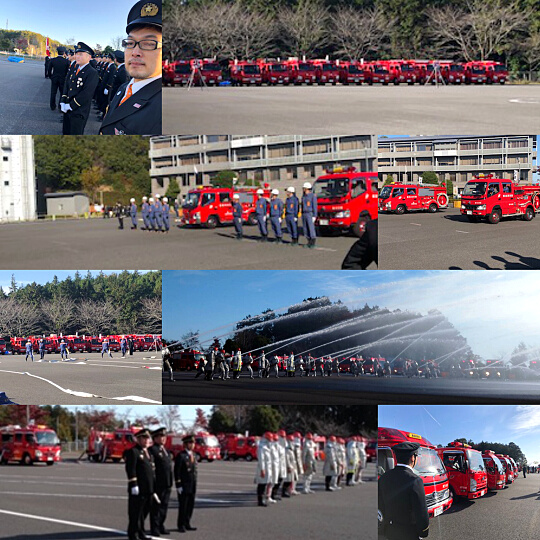
◆2019/10/27（日） 文化財訓練 本番
場所：長光寺・天候：晴れ・14：00出動開始。１回目 一線 二線 順調に放水、２回目 元ポンプから圧が下がり過ぎ水が上がらないトラブルが起きましたが無事放水することに成功。早朝より全団員訓練後長光寺文化財訓練をこなし一日ご苦労様でした。
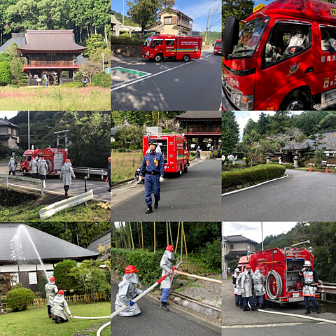
◆2019/10/27（日）
全団員訓練が挙行されました。11/23に行われる特別点検がスムーズに進行できるよう全体の流れの訓練を致しました。特に小隊、中隊訓練が少し難航してた様子が見受けられましたが本番では訓練の成果が発揮出来ると思います。
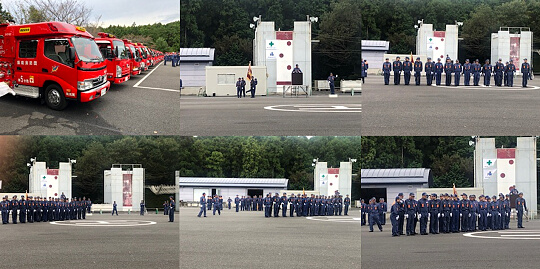
◆2019/10/20（日）文化財防火訓練予習
6年に一度の文化財防火訓練の予習が行われました。
場所：長光寺
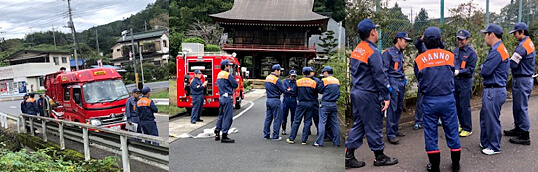
◆2019/10/12（土）台風19号の接近による広報
午前9：00より集合し広報警戒にあたりました。
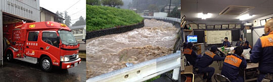
◆2019/9/21.22 1部研修旅行IN大阪
参加人数8名。大阪天王寺新世界等観光しました。旅行初幹事の築地団員が色々苦労しながらも最後までやりきり良い経験になったと思います。お疲れ様でした！！
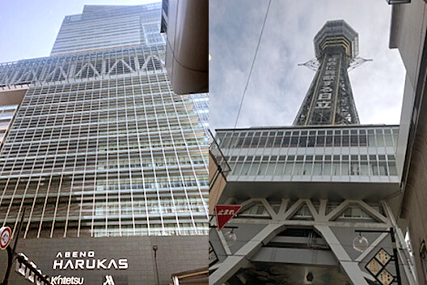
◆2019年8月13日(火) 新入団員紹介&岩渕盆踊り警備
紹介が遅くなりましたが新入団員の紹介させていただきます。6/1より入団しました小幡正隆団員です。同じ仲間として今後とも宜しくお願い致します。そして、地元で行われた盆踊りの警備にあたっております。
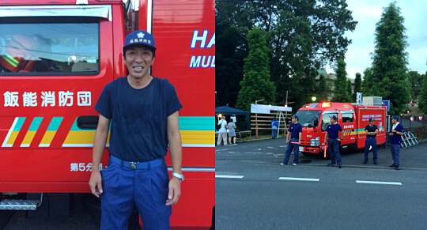
◆2019年7月27日(土)28(日) 研修旅行
場所：茨城にあるJAXA筑波宇宙センター、牛久大仏、那珂湊。この研修旅行で親睦が深まり今後の活動に向け
良い旅行になりました。
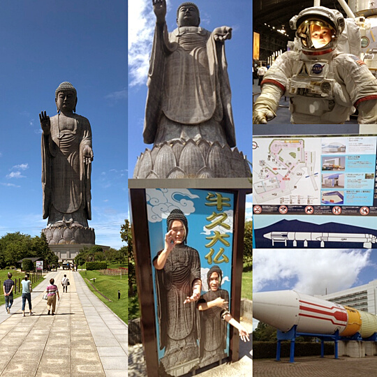
◆2019年7月7日（日）中継放水訓練
5分団6分団10分団合同で中継放水訓練が行われました。場所：第10分団地内(林道吾野・飛村線)、天候：小雨。第5分団の役割は水利から水槽にくみ上げられた水を送水する元ポンプ。長く急な勾配を十数本のホースを投げては取りに戻りの繰り返し、団員の連係でいち早く送水準備が整いました。新人加藤団員も多くを吸収しようと色々取り組んでくれました。中継放水訓練後の後処理も最後まできっちりこなして終了になります。お疲れ様でした。
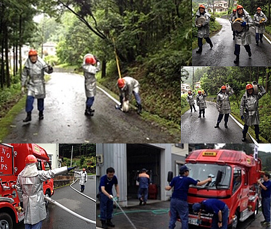
◆2019年6月2日（日）土砂災害防災訓練
土砂災害防災訓練ということで土砂災害を想定し車両で地域を見回り、その後自然水利を利用し水出し訓練を行いました。新たに6/1より入団された加藤基仁団員の初訓練で筒先ポンプ操作伝令等経験して貰い、市民の安心安全の為共に活動して行きますので宜しくお願い致します。
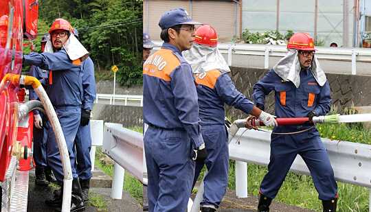
◆2019年5月25・26日 第17回飯能新緑ツーデーマーチ警備
5/25、5/26、第17回飯能新緑ツーデーマーチが開催されました。
第5分団1部 宝光前横断歩道上畑自治会前手押し信号
第5分団2部 下畑交差点クリーンセンター前交差点
晴天の中、参加者の安全の為に警備にあたっております。
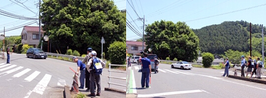
◆2019年5月19日(日)
全分団訓練後、救助資機材訓練訓練を行いました。新入団員の宿谷団員も普段では使わない機材を扱ってもらい訓練しました。
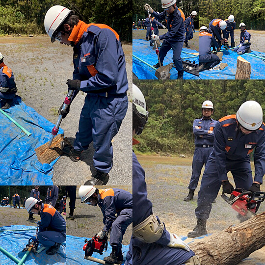
◆2019年5月19日(日)
令和となり全分団訓練が挙行されました。そして、新入団員にとって初の全団員訓練が行われました。
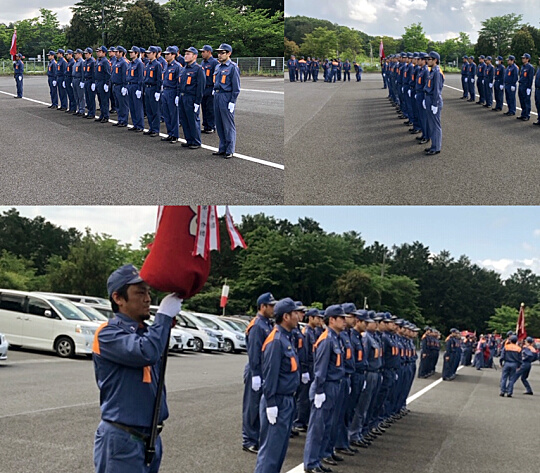
◆2019年4月14日（日）入団式
平成31年度 新春を迎え入団式が挙行されました。本年度より新団長 新井団長になり役員も変わり新体制になりました。そして、第五分団には新しい仲間が増えました。宿谷大介団員です。初めは消防活動に慣れないと思いますが良い先輩方のサポートで徐々に馴染んで貰い市民の安心安全の為共に活動して行きたいです。本年度も第五分団を宜しくお願い致します。
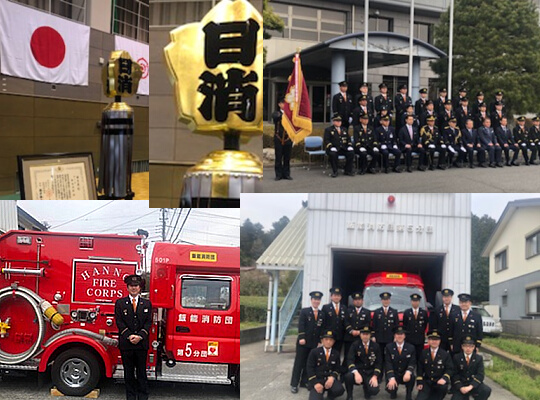